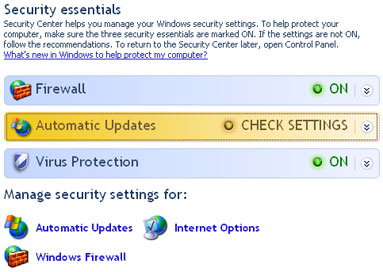
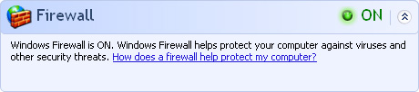
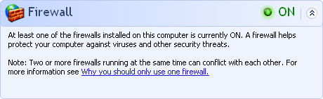
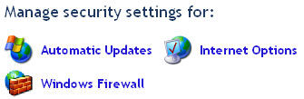
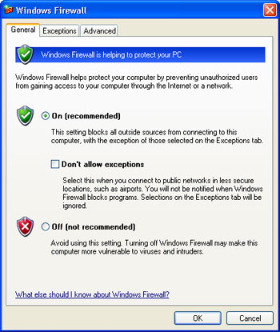
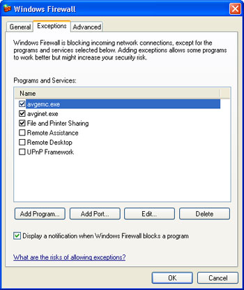
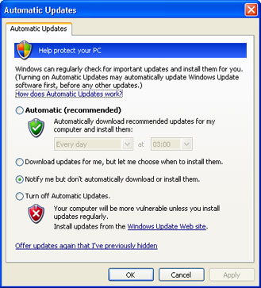
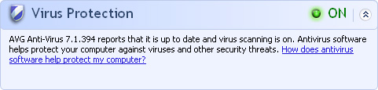

Free
computer Tutorials
|
Free
computer Tutorials
|
|
 home home |
Stay at Home and Learn | ||||
Windows XP Security CentreThis tutorial assumes that you have set the Control panel to Classic View. To see how to do this, click this link (opens in a new window): Set the Control Panel to Classic View
Windows XP comes with its own rudimentary security centre. This consists of a Firewall, and settings for Automatic Updates. It also tells you if you have anti virus software enabled.
To get at the Security Center (note the American spelling, for you Brits!), click the Start button in the bottom left of your screen. From the Start menu, click Control Panel. You should see an item for Security Center. Double click this to bring up the following screen:  If you can't see the Security Center icon in your Control Panel, then you need to update your version of Windows XP. The Security Center was part of Service Pack 2. Click Start > All Programs, and look for the Windows Update item at the top of the menu. Or go to the following internet address: http://windowsupdate.microsoft.com/ The page should (if you're using Internet Explorer) detect if you need
to update your version of XP.
Windows XP FirewallA software firewall is a programme that sits between you and the rest of the world, when you're on the internet. A good firewall will detect if anyone is trying to get at your PC, and automatically block the attempt. Firewalls like the free Zonealarm will even alert you if anything on your computer is trying to contact the outside world. It will then ask your permission for this programme to go ahead. You can, typically, click on a Block or Allow button. Windows XP came with a firewall. But until Service Pack 2, this was turned off by default. When Microsoft updated the XP operating system, it revamped the firewall, and turned it on by default. The Firewall option in the Security Centre tells you straight away
of it is on or off. Click the down arrows to see more options:  If you have a separate firewall on your PC, you might see this instead:  As the message says, having two or more firewalls on the PC can be a hindrance rather than a help. If you have something like Zonealarm, or Norton Internet Security, then you won't need the Windows XP Firewall. These programmes will even turn off the XP firewall for you. If you're only relying on the Windows XP firewall, however, there is an obvious danger: if Zonealarm and Norton Internet Security can switch off the XP firewall behind your back, so can things like viruses, worms and Trojans. It's recommended that your get a separate software firewall for your pc. But to see the settings for the XP firewall, click the icon under "Manage
Security Settings For": 
When you click the Windows Firewall option, you'll see the following screen:  We'll get on to Exceptions in a moment, but the only things you need to do on this screen is make your choice: On, or Off? Click OK to get back to the Security Center screen. You'll then see the Firewall section reflect your changes.
Firewall ExceptionsAn exception, in firewall terms, is a programme or service that you
would like to access your PC, and don't want your firewall blocking.
Click the Exceptions tab at the top to see the following screen:  In the list box, you see the programmes and service that are allowed. Here, we're only allowing three. Two of them are for AVG anti Virus, and the other is the Windows XP service File and Printer Sharing. Check your list to see if anything suspicious is on it. You should be wary if Remote Assistance and/or Remote Desktop are ticked. These are XP services that allow other people (PC technicians, for example) to control your computer. If you haven't allowed say the man form Dell to tinker with your PC over the phone, then you should ask why these are ticked. Remote Desktop is useful if you're away from home and want to access your PC. There is even software that allows you to do just that. If you have such software, it would explain why Remote Desktop is ticked. Check which programmes you have that might explain why these are ticked. If you have a version of XP other than XP Home Edition then there are separate settings for the Remote Desktop. In can be really handy if you're away on holiday and want to check your email! Some even hook up a few web cams so that they can keep an eye on things remotely. If you're interested in a free online service that allows you to do all this, then pop along to https://secure.logmein.com/products/pro/ for more information. You can add a programme to the list of exceptions by clicking the button. When you do, you'll see a list of programmes. Select the one you want to allow (or click Browse), and then click OK. If you're trying to get your computer to play an online game, then you may need to allow traffic on a certain port. The makers of the game will tell you which port number you need, and any other settings. Once you have these, click the Add Port button and enter the details. If you click the Advanced tab at the top of the dialogue box, you'll
see a list of network connections for which the XP firewall is enabled.
Automatic UpdatesWindows XP is prone to security attacks, as everybody knows. Microsoft try to keep on top of things by releasing updates to the operating system. If you have Automatic Updates turned on, then you don't need to do anything else: XP will connect to the internet, and check if any updates are available. If so, they will automatically be downloaded and installed. If , in the security center, Automatic Updates says "Check security
settings", then you haven't got it turned fully on. Click the link
for Automatic Updates, under "Manage security settings for",
to see the following settings:  In the image above, we specified that XP should notify us if there are any updates available, but it won't download them or install then unless we say so. It's recommended thatselect the first option, though - Automatic. You definitely don't want it on the last option - Turn off Automatic Updates!
Virus ProtectionAnother setting under Security Center is the Virus Protection. Click
the down arrows to see more information:  XP is telling us that we have AVG Anti-Virus, and that it is up to date. If you have less well know anti virus protection then it may not show up here, and Virus Protection may give you a false reading. As long as your Anti-Virus is running, then you don't need to worry about this. Security Center is a good addition to Windows XP, and if you don't have it in your Control Panel, you defintely need to update your computer - you could be, and probably are, at risk!
<--Back One Page Move on to the Next Part--> |
|||||
|